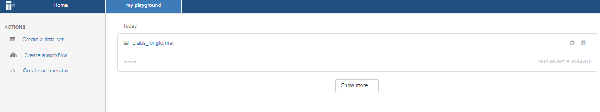
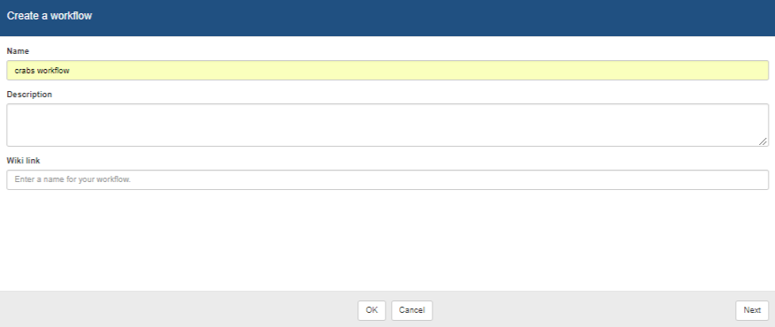
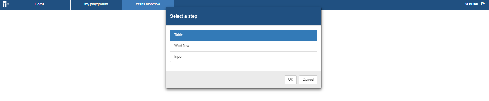
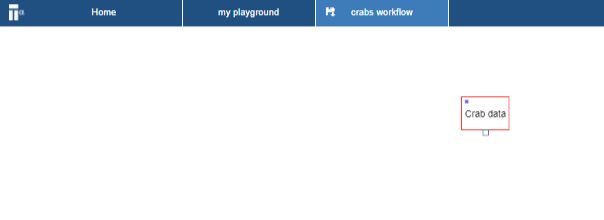

Chapter 7 Create a workflow
In this section you create a workflow.
- Go to the project page

- Click on Create a workflow
A dialog window opens which allows you to select the data file.

- Please fill in the Name with the name
crab workflow, the following information is possible:- Name (Mandatory)
- Description (Optional)
- Wiki Link (Optional)
Click Next and then click OK You will now have an empty workflow page titled
Crab workflowyou gave it.Right click in the workflow page and select Add step

Select Table and click OK A new step named Table should appear on your worklow page.
Select Table and right click and select Rename Rename the table to “Crab data”

- Right click on the Table step and select Run A window appear allowing you to select the data sets which are available. Select the crab data set you have uploaded.

- Select data set and click OK The Table step should now be green.
You have now successfully imported you data sets into the workflow.